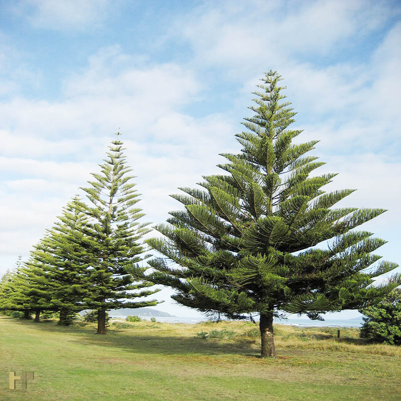

Họ Hoàng đàn hay họ Bách (danh pháp khoa học: Cupressaceae)
Tình trạng bảo tồn của IUCN

1. Đặc điểm hình thái
Đúng như tên gọi của mình, bách xanh là loại cây có màu xanh đậm, thân gỗ to, cây thẳng. Thông thường cây sẽ có chiều cao trung bình khoảng trên 20m, có đường kính thân cao từ 0,6 – 0,8m.
Vỏ cây sẽ có màu đen, trên thân cây có nhiều vết nứt dọc. Cây được phân thành nhiều cành cây, các cành cây mọc ngang, to và chắc chắn, có nhiều nhánh cây con. Lá cây cũng thuộc loại lá cây to, thường dài khoảng 5mm, đối với lá nhỏ cũng nằm trong khoảng 2mm. Mặt trên của lá có màu lục thẫm còn mặt dưới thì có màu bạc hơn.
Cây thường phát triển tốt ở những nơi mát mẻ và có bóng râm